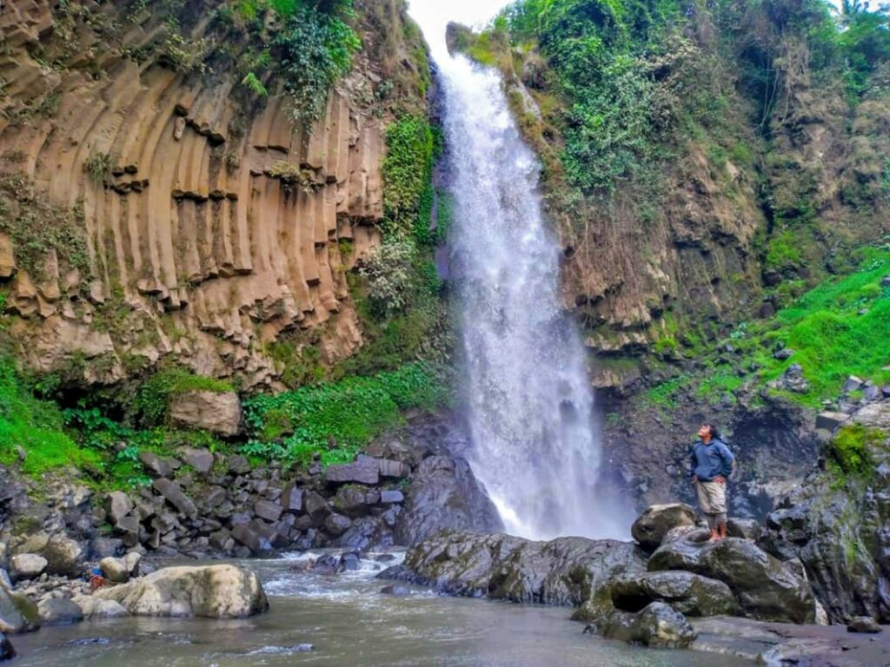

Wisata - Curug Putri
Curug Putri
Sirampog, Brebes

Curug Putri Brebes merupakan salah satu air terjun eksotis yang berada di Kabupaten Brebes tepatnya berada di daerah Sirampog, Kabupaten Brebes, Jawa Tengah.
Letaknya yang agak tersembunyi membuat kondisi alam air terjun ini masih terjaga. Bahkan, fenomena geologi di sekitarnya masih tampak terjaga dan menakjubkan,
di sepanjang perjalanan menuju curug itu wisatawan akan disuguhkan pemandangan indah. Saat sampai di lokasi, wisatawan akan disuguhkan pemandangan luar biasa.
Menurut cerita yang beredar di masyarakat, air terjun ini dulunya memiliki dua curug. Namun karena debit airnya menurun seiring berjalannya waktu, kini hanya tersisa satu curug yang mengalir. Walau begitu, air terjun tersebut masih memiliki keindahan dan tetap menjadi daya tarik pengunjung. Selain itu, sebagian masyarakat percaya bahwa Curug Putri memiliki asal usul yang unik. Kata “curug” diartikan sebagai air terjun, sementara kata “putri” diartikan sebagai bidadari dari kayangan. Berdasarkan kepercayaan nenek moyang, air terjun tersebut dulunya merupakan tempat mandi bidadari dari kayangan.
Selain dari pancuran airnya, keindahan air terjun itu adalah tebing batu dengan ukiran alam yang indah di kanan kirinya. Selain itu, air terjun Curug Putri juga terbilang cukup tinggi yaitu mencapai 35 meter. Tak hanya itu, di sekeliling air terjun banyak tumbuh-tumbuhan hijau yang membuat pemandangan makin memesona. Curug Putri belum menjadi tempat wisata yang dikelola secara resmi. Tidak ada tiket masuk yang diberlakukan bagi pengunjungnya. Namun, pengunjung bisa memberi biaya sukarela untuk parkir atau toilet pada warga sekitar. Meski bukan tempat wisata resmi, namun fasilitas penunjang sudah dikelola dengan cukup baik. Di sekitar air terjun terdapat toilet umum serta pos untuk beristirahat. Tempat parkir pun disediakan untuk pengunjung yang membawa motor atau mobil. Jalan setapak menuju lokasi air terjun berupa pematang sawah dan tangga dari semen.
Our Networks
Untuk meningkatkan kualitas dan menjaga kelestarian
Kita bekerja sama dengan pemerintah